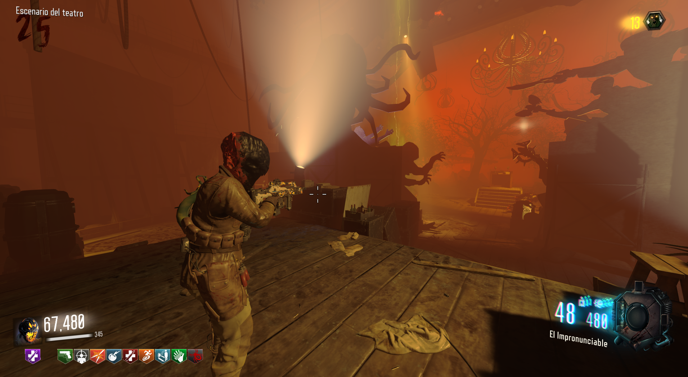
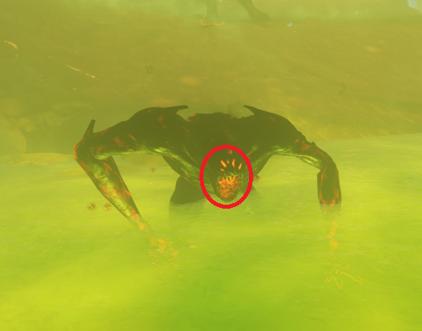
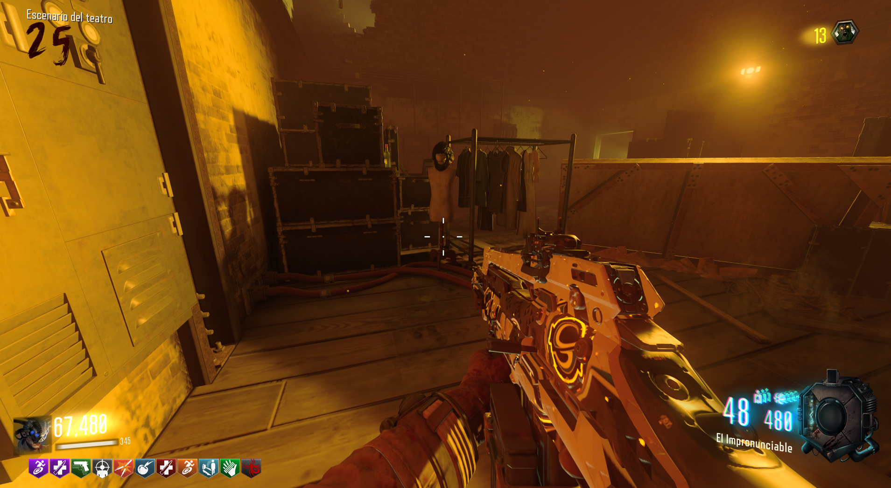

Máscara de Furias (Revelations)

La máscara de Furias nos dará lo siguiente:
+1 impacto de zombies.
33% de reducción de daño CaC de los furias.
El jugador inflige 50% más de daño a las furias.
Lo primero será tener la máscara de lobos, es obligatorio. Lo único que tenemos que hacer es matar a alrededor de 15 furias de tiro a la cabeza, escucharemos un sonido de confirmación.

Cuando lo hagamos, iremos a Kino der Toten y podremos reclamar la máscara.
